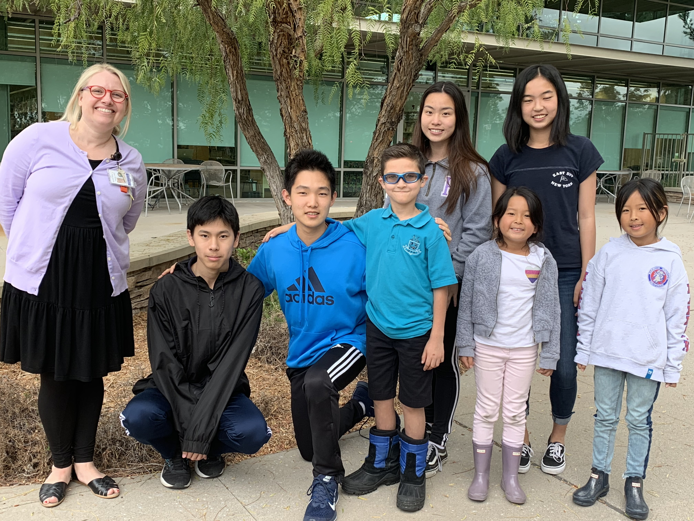

How many times have you heard a student say, "Math is so boring"? Maybe you even said it yourself. Our mission, here at the math help and enrichment club, is to combat this mentality by giving students explanations that actually make sense and promote higher-level thinking. We believe that math is not about just memorizing formulas, but much more about looking for patterns and trying new approaches. At its heart, math is a beautiful subject, and the sooner kids understand this the better.
Math skills taught in early childhood education are designed to provide a solid foundation children need to succeed throughout elementary school and beyond. It opens the door to Science, Technology, Engineering, and Math (STEM) Careers in adulthood. However, small obstacles encountered in young learners could affect their self-confidence and attenuate their interests. Because of that, we sometimes hear elementary school students saying that they would never consider pursuing the math subject themselves because they are just not a math person,
or they never really liked math,
or math is so boring.
The lack of enthusiasm for STEM fields in the earlier years of a child's education is very unfortunate.
When a student comes to our library math club, we make sure that he/she not only understands the material, but is also motivated to think about how we would use this in everyday life. Some students come to us thinking that "Math is made up. Why should I care?" However, we believe that the reason you should care about math is that it is abstract, which makes it universal and incredibly useful.
Of course, it's not just about the practicality of math that makes it important. Here, we just like to do math for the sake of having fun. Solving puzzles and challenging yourself are some of the most enjoyable things you can do. We would like to help kids view math not as a chore, but a hobby.
We are always happy to help
